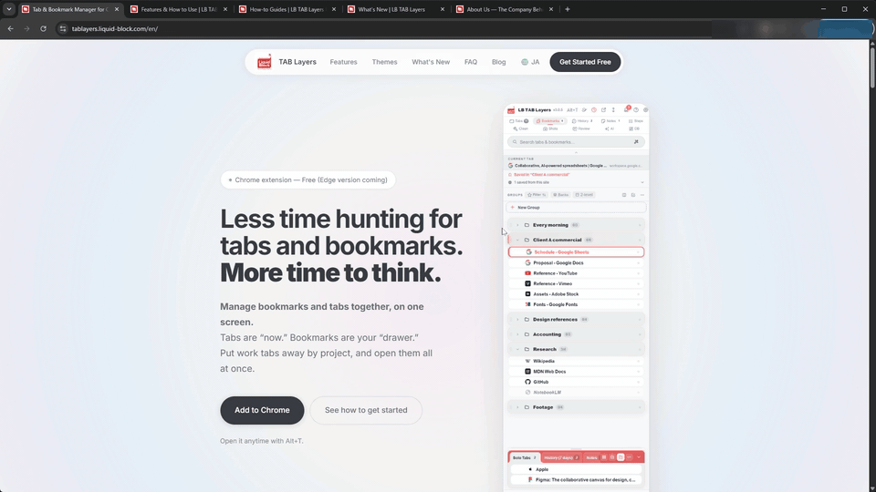
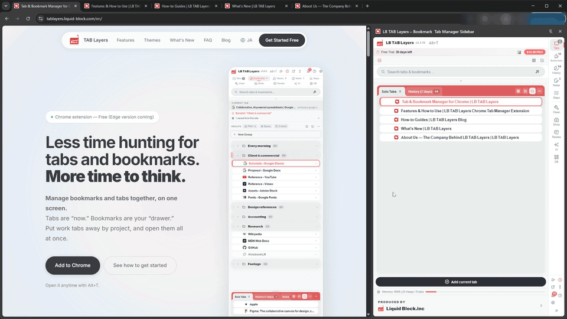
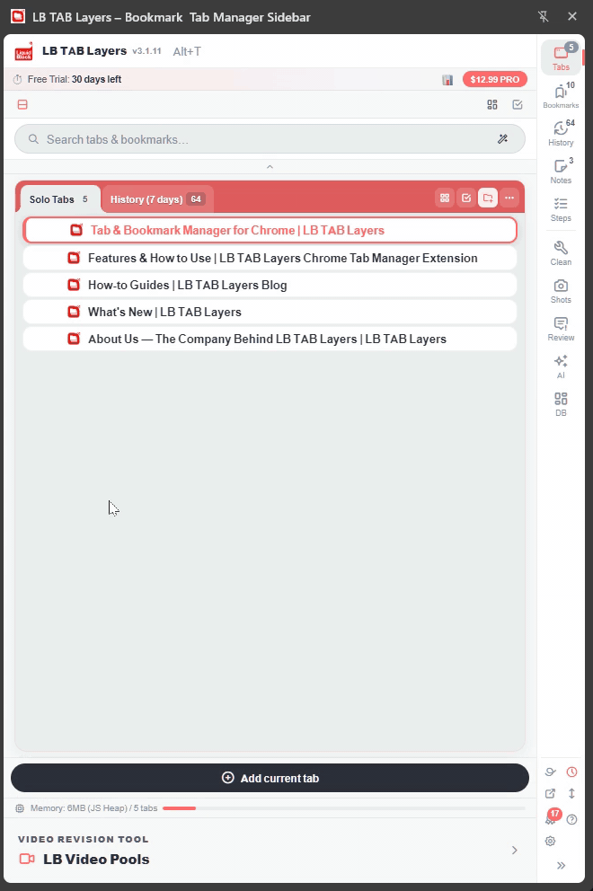
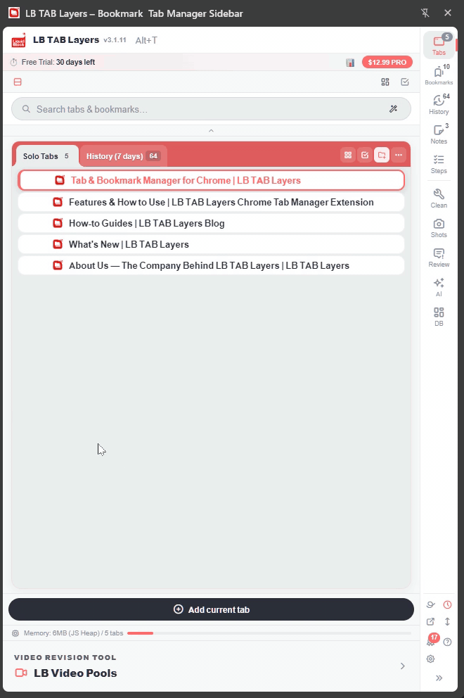
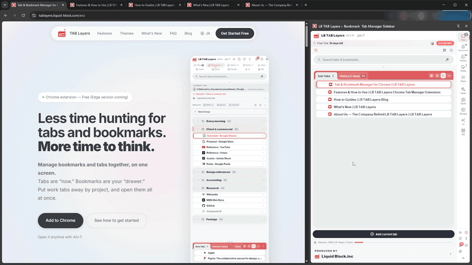

For first-time users who want to know where everything is.
Open the side panel
Show the panel at the side of the browser
Where: Alt+T / the extension icon
Press Alt+T on your keyboard to open the side panel. Press it again to close it. You can also open it from the extension icon in the toolbar. To change the key, use Chrome's extension shortcuts page.

Press Alt and T to open it at the side, any time. Press again to close it.
Switch views
Switch between five views: Tabs, Bookmarks, History, Notes and Steps. Each has a count badge
Where: Top of the right rail
The top five items in the panel's right rail are views: Tabs, Bookmarks, History, Notes and Steps. The numbers show how many items each one holds. Below them are tools: Clean, Shots, Review, AI and DB. Click one to switch what is shown on the left.

Switch views from the right rail. The top five are Tabs, Bookmarks, History, Notes and Steps. Below them are tools such as Clean, Shots and Review.
Switch tools
Open Clean, Shots, Review, AI and DB (the Dashboard)
Where: Middle of the right rail
The tools sit in the middle of the right rail. Click to open Clean, Shots, Review, AI or DB (the Dashboard).
Current tab
Shows the title and site of the page you're viewing. Click to jump to that tab
Where: Top of the panel
The top of the panel shows the title and site of the page you're viewing. Click it to switch to that tab.
Layout
Switch between “Split (Tabs / Bookmarks)” and “Combined”
Where: Button at the top / Settings › Look
“Split” shows tabs and bookmarks on separate, roomy views. “Combined” stacks your groups on top and your open tabs below, so you see both on one screen. Switch with the button at the top of the panel, or in Settings › Look › Layout.
You can also stack tabs and bookmarks, one above the other, on a single screen.
Move the right rail to a row across the top. Collapse the rail to icons only
Where: Settings › Look / “Collapse” at the bottom of the rail
Click “Collapse” at the bottom of the right rail to shrink it to a slim, icons-only rail. To place the switcher in a row across the top instead, choose Settings › Look › Layout › Mode switcher position.

The right rail can be collapsed to icons only.
Display density
Switch between Auto, Standard and Compact
Where: Bottom of the right rail
Each click on “Display density” at the bottom of the right rail cycles through Auto, Standard and Compact. Auto switches to Compact only when the panel is short.

Change how tightly the rows are packed here.
Hide the toolbar
Fold away the search row at the top
Where: The thin bar below the search box
Click the thin bar below the search box to fold away the search row at the top. Handy when you want more room for the list. Click again to bring it back.
Choose a display method
Open the panel in a separate window or a new tab. Open the Dashboard
Where: Bottom of the right rail
From “Switch display method” at the bottom of the right rail, you can open the panel in a standalone window, open it in a new tab, or open the Dashboard.
The panel can also open in a new tab or a separate window.
Overlay display PRO
Show the panel on top of the page. Choose its side, width, button position and how it appears at startup
Where: Settings › Behavior › Display mode
Choose “Overlay” in Settings › Behavior › Display mode and the panel appears on top of the page. You can also set the side (left or right), the width, where the button sits and how it appears at startup. PRO feature (available during the free trial).
You can also have it slide in over the page, and tuck it away just as fast.
Slim rail at the page edge
Show a slim, icons-only rail at the edge of web pages. Jump straight to pins and open tabs
Where: Settings › Look
Turn on “Show a slim favicon rail at the page edge” in Settings › Look › Layout and a slim rail appears at the edge of web pages. Click ≫ to open the panel, or click an icon to jump to a pinned site or an open tab.

Even with the panel closed, you can jump to tabs from the slim rail at the page edge.
Show and change the shortcut
Shows the assigned key at the top. Click it to change the key
Where: “Alt+T” at the top of the panel
The key that opens the panel (Alt+T by default) is shown at the top of the panel. Click it to open Chrome's shortcut settings and pick any key you like.